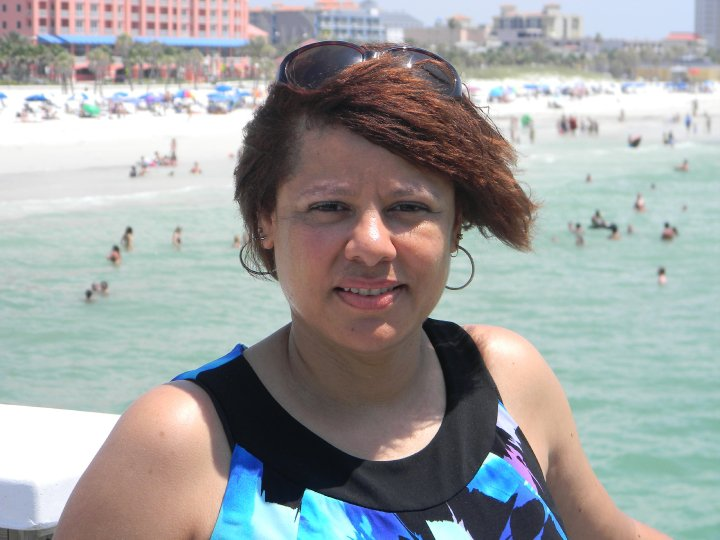

I started a professional career as a Respiratory Therapist in my late twenties. After being a therapist for eight years, I leaped again and entered college for secondary education. I worked in the education field for a few years. While working in education, I remained in the medical field, although part time with occasional contract work. The year 2000, I left education to work full time in respiratory for a children's hospital. Although I intially enjoyed my career, I knew that technology is what I wanted to pursue. THe desire to develp the skills to code has lead my current path. LC101.
My silent friend of yesteryear disowned - I did not know until we met again I walked those halls silently blind alone. The beat of life (and you) escaped me then. His face, her face - your face - countenance lost In connection ungained, the shame of me, Unknowing future we would share - what farce: Innocent yet twisted - lacking memory. Today we meet in sorrows' darkened space - I lose my breath upon recognition. Disease's ravishment, servering every trace: My eyes deceive! Stop this course - remission! I am sorry! So much excapes the eye. My silence screams - I knew him then. I lie.
The place I most often vacation is Clearwater, Florida. My husband, Martin was born and raised there. What fortune! I adore the ocean with it's companions. The water and sun. There's no need to dream about flying. I float on my back with my eyes closed. Still seeing the red flames of the sun. I've never felt such freedom and connection. Me, the quiet waves the amphibius, unknown, below me. The causeway that crosses the bay from Clearwater to Tampa is a short and satisfying journey. Parallel to the causeway, is where the bay anchors a road.
.jpeg)
.jpeg)